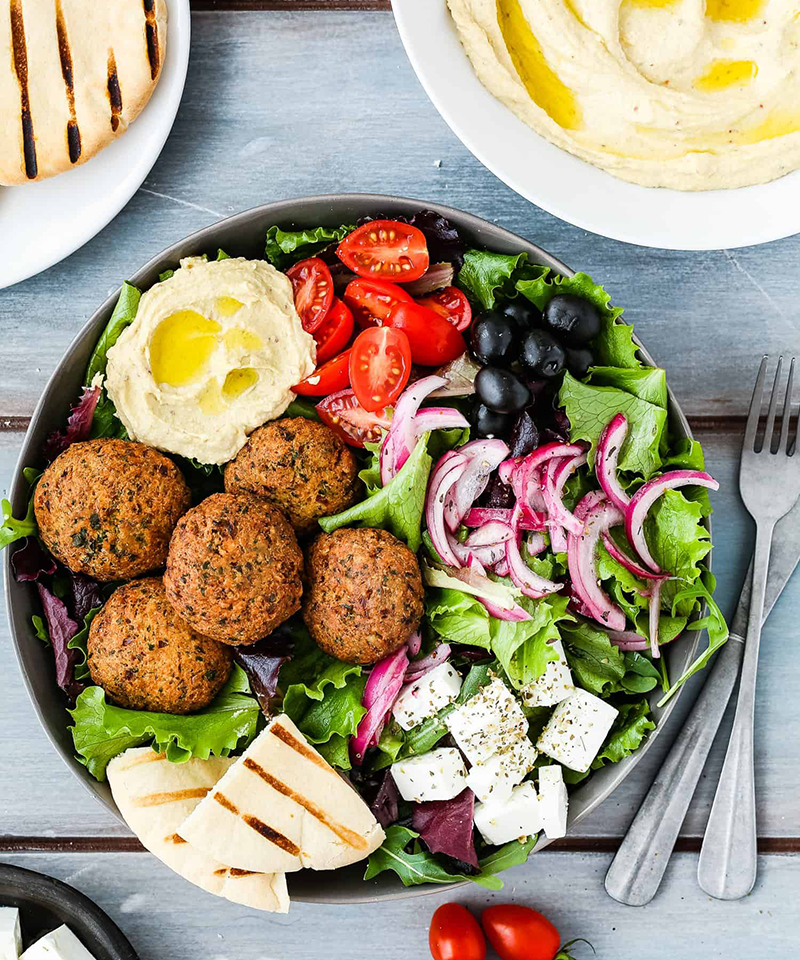
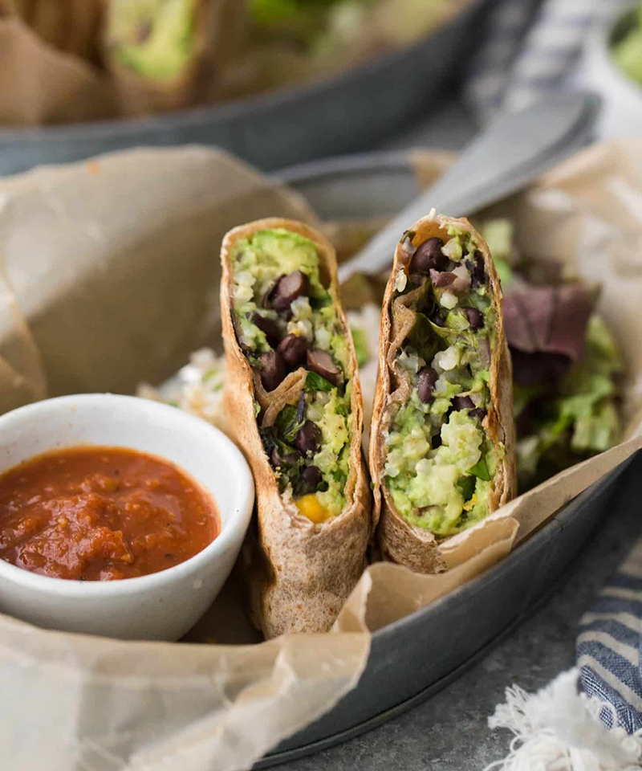
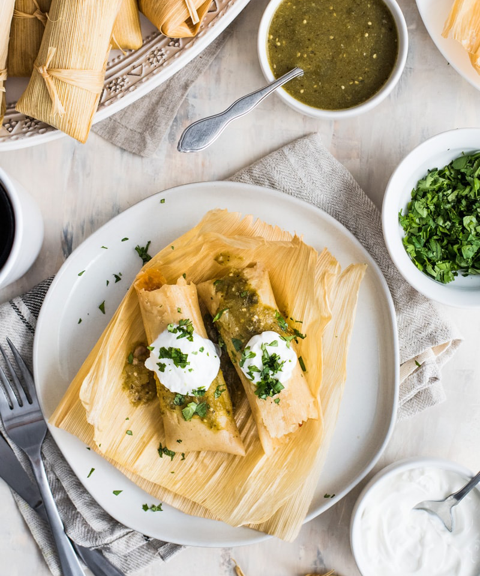

What's On Today's Menu
Flaming Hummus & Falafel Salad
A bowl full of greens, veggies, olives, hummus, falafel, and tahini sauce. Swoon.
Sizzling Bean Burrito
Our most popular dish is a protein-packed flavorful bundle of joy. Who needs meat?
Green Gloves Tamales
Rolled with hand-picked tomatillos and serrano chilis. The perfect "hot tamale".